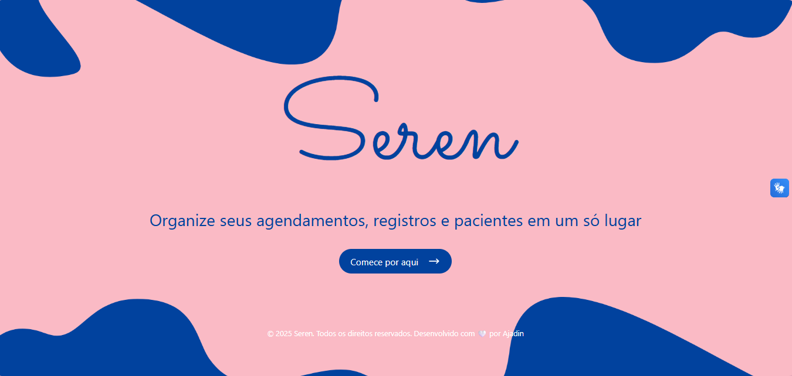
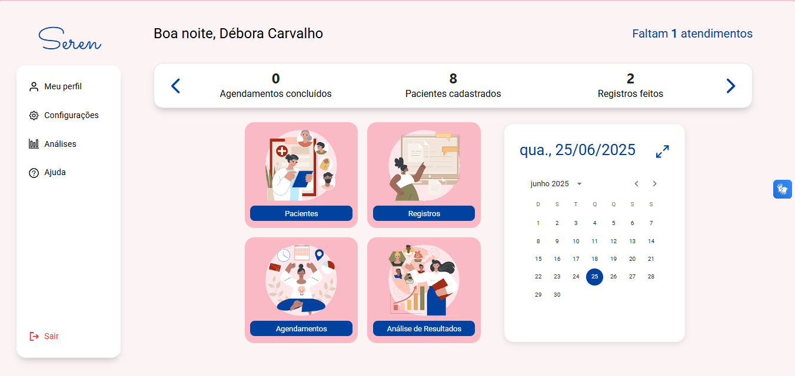
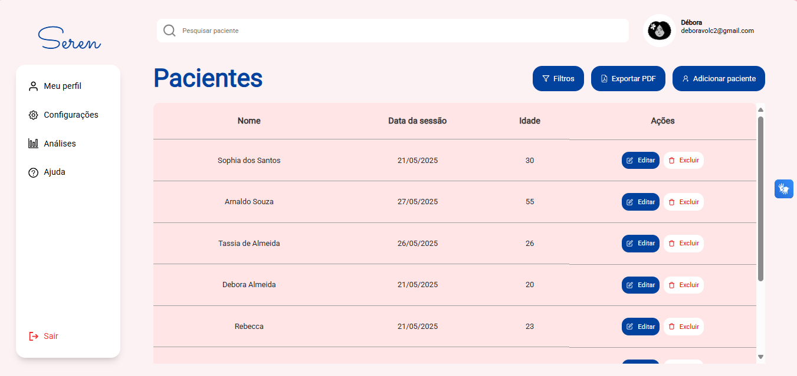
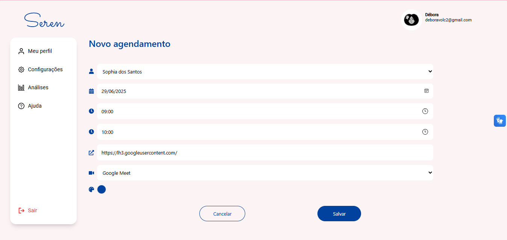
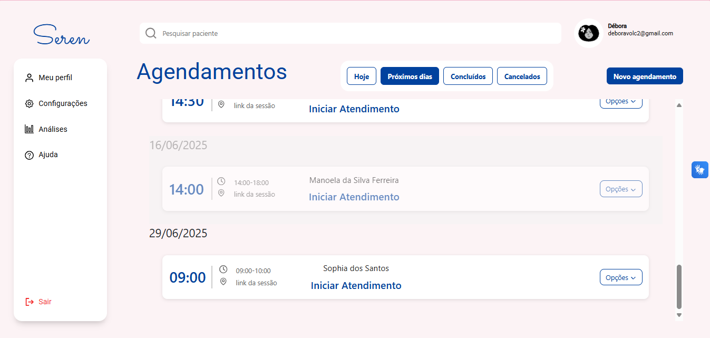
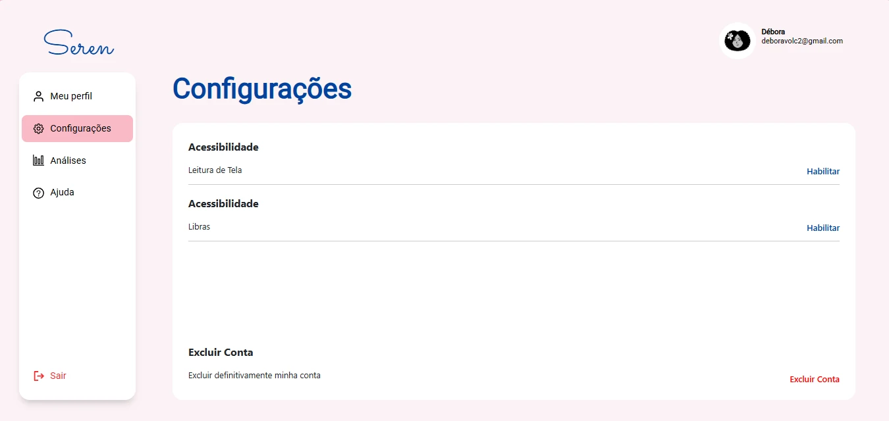

Aplicação web · Psicologia
Seren
Agendamentos, pacientes e pagamentos reunidos para apoiar a rotina de psicólogos.

O projeto
O Seren é uma plataforma de gestão para profissionais de psicologia. A proposta centraliza a organização dos atendimentos, o cadastro de pacientes e o controle de pagamentos, com recursos para acompanhar a rotina profissional.
Proposta e estrutura
A aplicação combina uma interface React com um backend em JavaScript, Node.js e Express. O MongoDB foi adotado para atender ao requisito acadêmico de uso de um banco de dados não relacional.
Backend, banco de dados & Scrum
Minha participação
- Participei do desenvolvimento do backend em JavaScript e da integração com o MongoDB.
- Colaborei na organização das rotas, controllers e serviços da aplicação.
- Mantive uma atuação forte em planejamento e documentação, alinhando as responsabilidades e entregas da equipe.
Scrum e colaboração
Atuei como Scrum Master na organização do trabalho: estruturação do backlog, planejamento de sprints conforme os prazos da faculdade, divisão de tarefas e acompanhamento das entregas. Facilitei reuniões, alinhamentos e resolução de conflitos, além de apoiar a definição de requisitos e a documentação.
O que essa experiência acrescentou
Ampliei minha experiência para um banco não relacional e aprofundei a separação de responsabilidades no backend. Minha contribuição técnica concentrou-se em backend e dados; a interface foi desenvolvida pelas colegas da equipe.
Tecnologias
Na minha atuação
No projeto completo
O projeto em telas
Registros da aplicação desenvolvida pela equipe. As imagens mostram o produto completo; minha contribuição está descrita na seção acima.












Explore o projeto
Repositórios da organização Best-of-the-class com os arquivos e a documentação do projeto.